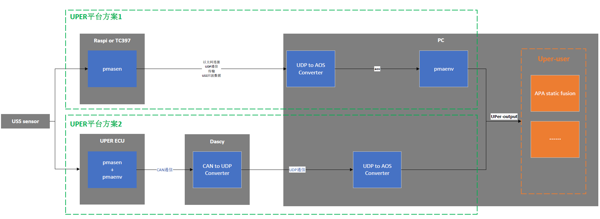

UPer plugin risk
GUO Hongming, 20221110
Risk Ticket:
UPER platform solution 2 Data transmission links are not clear
Problem Description:
Platform solution 1 and platform solution 2 need parallel existence to meet the needs of different customers;
For two solutions, users who perceive the results of UPER ( UPer-user ) Only maintain one interface file for easy development and management;
Regarding scheme 1, the USS Sensor hardware has certain specialties and cannot be directly connected to PC or domain control.Therefore, the Raspberry Pi is added (the follow -up will be changed to TC397), and the UPER code (PMASENS) is run, and another code (PMAENV) is run on the PC.The two parts are connected through UDP communication.The UDP package transmits unruly one -dimensional array.After the UDP package reaches the PC, it needs to be converted into AOS MSG through AOS Gatway, and then the one -dimensional array is restored to structured information for PMAENV through the decoder.PMAENV final output UPER perception results ( UPer-output ) For UPER-User.
Regarding scheme 2, run all UPER codes directly in UPER ECU, and send the result to PC or domain control through Canal communication. After arriving at the PC, you need to convert the Can message into the UPER-OUTPUT structure in a solution 1 for UPER-User to use ；
Block point:
There is a GAP between the CAN protocol and scheme 1 established UPER-OUTPUT structure. You need to do a certain logical conversion to mapPing.
